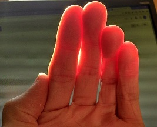
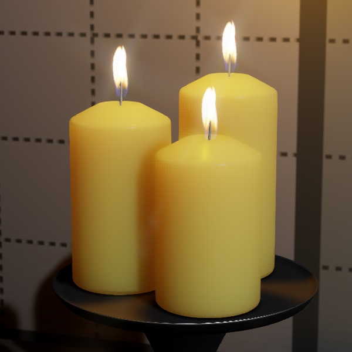

サブサーフェス スキャタリング
中級 アーティスト
マテリアルでサブサーフェススキャタリング（Subsurface scattering）を有効にすると、モデル内部で光が不規則な角度で反射します。これを利用して、肌、ロウソク、葉、大理石、磁器などの半透明なマテリアルをリアルに表現することができます。
下の写真は、その効果の実例を示したものです。

（画像提供：Davepoo2014, Creative Commons Attribution-Share Alike 4.0 International ライセンス ）
以下のスクリーンショットでは、Stride でサブサーフェイス スキャタリングを使用してロウソクをレンダリングしています。
| サブサーフェス スキャタリング オフ | サブサーフェス スキャタリング オン |
|---|---|
|  |
2 枚目の画像では、ロウソクに光が当たることで、影がより柔らかくなっています。
サブサーフェス スキャタリングを有効にする
サブサーフェス シェーディングを適用したいマテリアルを選択します。
プロパティグリッドで、Shading > Subsurface scattering の横にある
 （置換）をクリックし、Subsurface scattering を選択します。
（置換）をクリックし、Subsurface scattering を選択します。
プロパティ

| プロパティ | 説明 |
|---|---|
| Scattering width | 光の散乱距離。ワールド単位。 |
| Translucency | 光がマテリアルを透過する割合を表します。0.0 で完全不透明、1.0 で完全透明になります。 |
| Translucency map | グレースケールマップを指定して、マテリアルの様々な領域がどれだけ透明であるかをコントロールします。明るい値ほど散乱が大きくなります。例えば、耳は頭頂部よりも散乱させるべきです。耳は薄いので、光が通過しやすいからです。テクスチャーには Translucency の値が乗じられます。 |
| Scattering profile | 後のレンダーパスで使用する散乱プロファイル。
|
| Scattering kernel | サブサーフェス散乱のポストプロセスで使用する散乱カーネル。
|
Transluency: 0.2 |
Transluency: 0.98 |
|---|---|
グラフィックスコンポジターのオプション
グラフィックスコンポジターエディター には、サブサーフェイス スキャタリング用の追加オプションがあります。これらのオプションは、サブサーフェイス スキャタリングを使用するすべてのマテリアルにグローバルに適用されます。
アセットビューで、グラフィックスコンポジターアセットをダブルクリックします。

すると、グラフィックスコンポジターエディターが開きます。
Subsurface scattering ノードを選択します。

プロパティグリッドで、プロパティを編集します。

プロパティ
| プロパティ | 説明 |
|---|---|
| Follow surface | 大きな深度差での光の散乱を防ぎます。GPU のパフォーマンスに影響します。 |
| Passes | ぼかし（ブラー）を実行する回数です。回数が多いほど、より滑らかな結果が得られます（ノイズやバンディングが少なくなります）。 |
| Jitter kernel size | アンダーサンプリングに起因するバンディングアーティファクトを低減するために、ノイズを使用します。より滑らかな効果が得られますが、技術的には正確さに欠けます（近距離では顕著になることがあります）。 |
| Render mode | デバッグ用にレンダーモードを変更します。 |